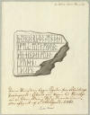
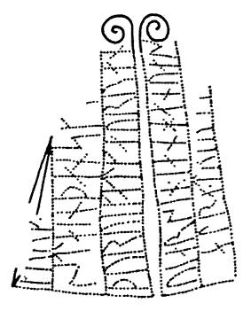

Maribo
Lolland-Falsters Stiftsmuseum
2 Runensteine
Skovlænge
Grobkörniger, rötlicher Granit mit weißen Adern und Korn aus Quarz
Höhe ü. d. Erde: 140 cm
Breite (vorne): 106 cm
Runenhöhe: 15 - 21 cm
Runeninschrift
Astrath errichtete diesen Stein zum Andenken an Iuti, seinen Vater, einen sehr wohlgeborenen "Thegn".
Sædinge
Grobkörniger, grauer Granit
Höhe über der Erde: 174 cm
Größte Breite: 79 cm
Größte Dicke: 68 cm
Runenhöhe: 9,5 - 25 cm
Runeninschrift
Thorwi ließ diesen Stein machen (zum Andenken an) Krok, ihren Gatten; und er war (damals?) der allerstärkste (?) der "Sonderschweden" (d.h. der Schweden, die sich von den Schweden im Heimatlande abgesondert hatten) und der Süddänen.
Qual (d.h. Leiden) verzehrte den Häuptling (oder ihn) (d.h. machte seinem Leben ein Ende), den besten der Nordmänner (?). Er war... der "Sonderschweden" ...
Maribo
Lolland-Falsters Stiftsmuseum
Banegårdspladsen 11,
DK-4930 Maribo
Öffnungszeiten: Mo bis Fr: 09.30 - 16.30 Uhr / Sa: 10 - 16 Uhr / So: geschlossen (Laut Homepage, Stand: 24.02.2017)
Eintritt: Erwachsene 50 DKK / Kinder (unter 18) frei
Internet: Homepage des Museums (teilweise in deutsch)
Alle Angaben - Stand 11/2014 - ohne Gewähr!
Das Museum beschäftigt sich mit der Geschichte und Kultur der Inseln Lolland und Falster vom Altertum bis zur Gegenwart. Die Sammlung des Museums umfasst Gegenstände und dokumentierte Beobachtungen aus allen Perioden. Im Jahr 2008 wurde die Sammlung zuletzt überarbeitet.
Im Spätjahr 2014 wurden die beiden unten angeführten Runensteine (1,2 und 1,8 Tonnen schwer) in das Museumsgebäude, das aus dem Jahre 1889 stammt, versetzt, damit sie nicht weiter Wind und Wetter ausgesetzt sind.
Ein in dänischer Sprache gehaltener Bericht zur Umsetzung auf der Homepage des Museums findet sich hier.
Hinweis: Der Silberschatz von Duesminde
Im Januar 2002 wurde von Henrik Schilling, damals Kurator des Lolland-Falsters Stiftsmuseum, Nachuntersuchungen am Fundort eines vor vierzig Jahren sporadisch aufgelesenen Hortes von Gold- und Silberringen des späten 9. Jahrhunderts n.Chr. veranlasst. Gefunden wurde dabei in Duesminde/Lolland der bislang reichste Wikingerschatz mit hochkarätigem karolingischem Silberschmuck, insgesamt mehr als 1.300 Gramm.
Hierzu ist der Katalog "Die Macht des Silbers. Karolingische Schätze im Norden", im Verlag Schnell & Steiner, 2005, erschienen.
Die erste Erwähnung fand dieser Runenstein durch Jon Skonvig im Jahre 1627. Er fand den Stein bei einer Steinbrücke (Jungfernbrücke), zwischen Skovlænge und Gurreby (ca. 20 km nordwestlich von Maribo), bei einem großen Grabhügel. 1652 wurde er mit den anderen lolländischen Runensteinen von Kopenhagen eingefordert. Søren Abildgaard (Archivzeichner, 1718-91) fand ihn dann 1765 an einem Weg bei einer Steinbrücke, in einer Reihe mit anderen Steinen. Von ihm stammt diese Zeichnung (Der Digitalen Sammlung des Nationalmuseums Kopenhagen entnommen):

Handschriftlicher Text:
"Denne Runesteen ligger Synden for Schoulænge Præstegaard i Lolland paa Vejen til Gurrebye ved en Steen-Broe i Rad med andre Stene. Blev aftegnet af S: Abildgaard. A(nn)o 1765."
Originalgröße der Skizze: 16,5 x 22 cm
Ende des Jahres 1848 wurde er zum Skovlænge Pfarrhofacker und 1879 in den Skovlænge Pfarrhofgarten versetzt. Im Jahre 1894 wurde er beim Maribo Museum aufgestellt.
Der Stein hat teilweise eine extrem unebene Oberfläche. Zwei der vier senkrechten Runenreihen weisen eine Verzierung mittels einer einfachen Spirale auf.

Die Infos zu diesem Runenstein von der Homepage der dänischen Runendatenbank findet man hier.
Dieser Runenstein wurde 1854 auf einem Acker in der Nähe einer alten Furt, die angeblich zu einer Thingstätte führte, zwischen Sædinge und Holeby (ca. 8 km südwestlich von Maribo) gefunden. Dies war sicher auch sein ursprünglicher Standort. Da er beim Pflügen gehindert hatte, wurde er unglücklicherweise in kleiner Stücke gehauen (insgesamt 9). J.J.A. Worsaae (Archäologe, 1821-85), entdeckte, dass die Bruchstücke Runenzeichen aufwiesen. Die Bruchstücke wurden zum nahe gelegenen Nebbelunde Pfarrhofgarten verbracht. Daraufhin wurden die Stücke wieder zusammengefügt und der Stein mit der Seite D nach unten aufgestellt. Erst als der Stein 1893 zum Maribo Museum verbracht wurde, entdeckte man (wieder), dass auch diese Seite Runenzeichen aufwies. Nur ein kleines Stück der Spitze, das auf der Zeichnung der Seiten A-C von Jacob Kornerup (Architekturmaler und Archäologe, 1825-1913) aus dem Jahr 1859 noch erkennbar ist, blieb verschwunden und tauchte auch später nicht mehr auf. Dieses Stück, auf dem 4 Runen eingeritzt waren, verschwand zwischen 1859 und 1871, als Magnus Petersen (Zeichner, 1827-1917) den Runenstein (Seite A-C) zeichnete. Die einzelnen Teile des Runensteins wurden nun mit Zement zusammengefügt und aufgestellt. Hierbei ging man aber dermaßen plump vor, dass man einzelne Runen abdeckte. Hierdurch war die Lesung der Schrift stark erschwert. Außerdem war er viel zu tief in die Erde eingelassen worden. Deshalb wurde er 1933 erneut zerlegt, das fehlende Teil der Spitze rekonstruiert und der Stein nun unter Beachtung der Inschrift und des Charakters des Steines wieder restauriert.
Die Inschrift legt Zeugnis ab über eine Siedlung schwedischer Wikinger auf der Insel Lolland im 10. Jahrhundert. Die Bezeichnung "Sonderschweden" steht für eine Gruppierung, die sich von den übrigen Schweden abgespalten hatte. Auch in Grabfunden und Ortsnamen lässt sich die Anwesenheit schwedischer Wikinger auf Lolland nachweisen.
Die Runenschrift verteilt sich auf alle vier Steinseiten. Heute ist der Runenstein mit der Seite C gegen die Wand des Museums errichtet. Die Spitze der Seiten AB (siehe unten) und D weist jeweils eine Verzierung mittels einer einfachen Spirale auf.

Die Infos zu diesem Runenstein von der Homepage der dänischen Runendatenbank findet man hier.
Ein Mitarbeiter des Museums erlaubte mir am 24.05.2005 zum fotografieren über den Seiteneingang Museumsgade nahe an die Runensteine heranzugehen. "Es sollen doch gute Fotos werden!", meinte der freundliche Herr - herzlichen Dank dafür!
Bei meiner Rückfahrt von meiner Wikinger-Tour 2016 am Mittwoch, 31.08.2016, war das Museum leider geschlossen (siehe Foto Maribo_Info unten), so dass ich die beiden nach innen versetzten Runensteine nicht sehen konnte. Mir blieben nur Fotos des Museum von außen. Inzwischen haben sich die Öffnungszeiten wohl wieder geändert (siehe oben), was mir jetzt aber leider nichts mehr bringt! Wer weiß, wann ich es mal wieder schaffe vorbeizuschauen!